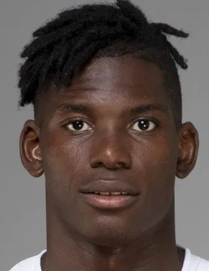
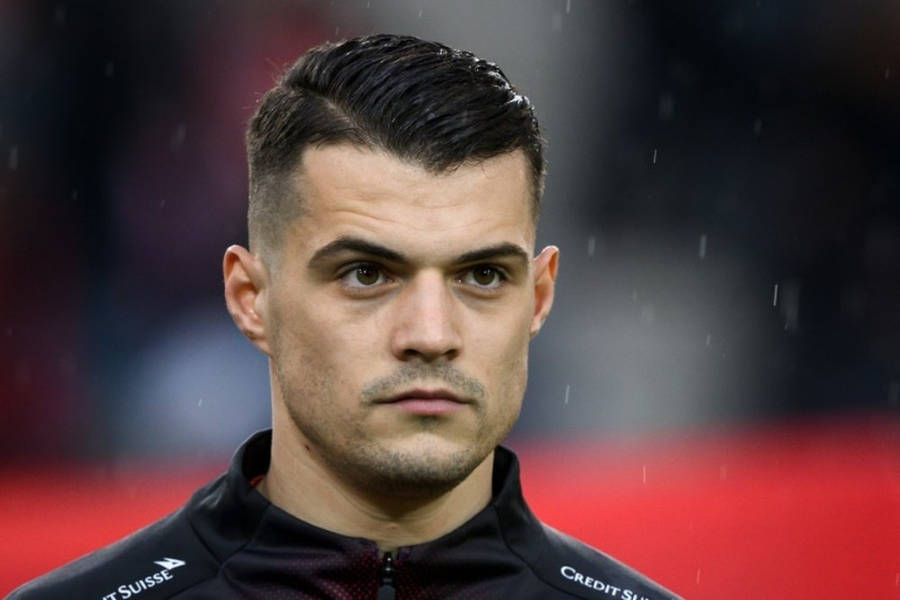
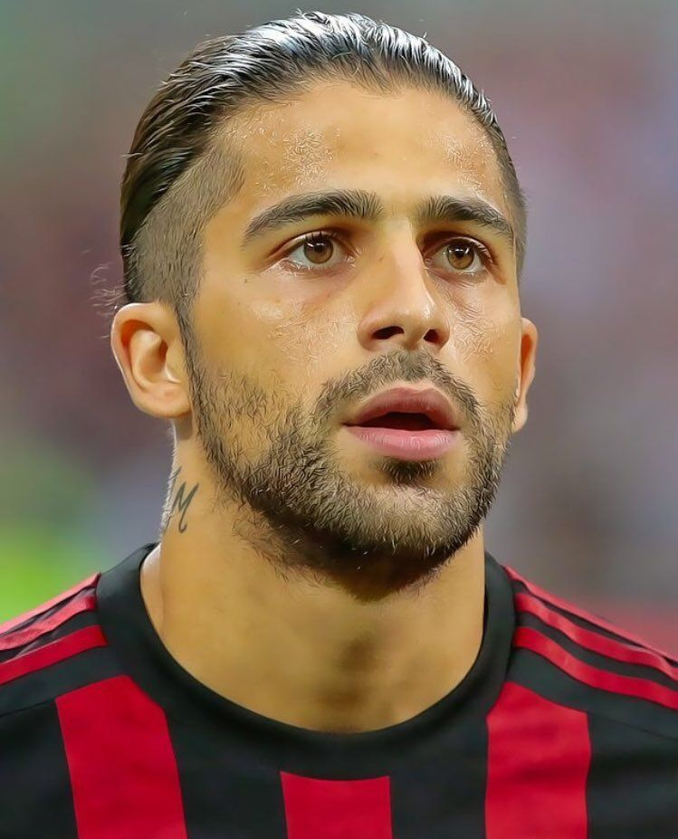
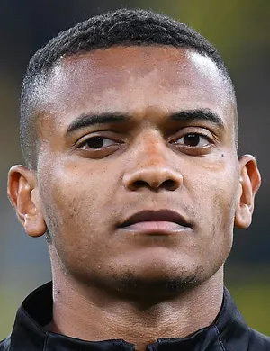

SUIZA
Suiza llega al Mundial 2026 con una selección sólida, disciplinada y con experiencia en las grandes competiciones internacionales.

Formación 4-3-3




Suiza aseguró su presencia en el Mundial gracias a una destacada campaña en las eliminatorias de la UEFA.
La selección suiza es reconocida por su disciplina táctica y regularidad en torneos internacionales.
Alcanzar las fases eliminatorias y competir contra las mejores selecciones del mundo.
UEFA
Nati
1934
Granit Xhaka
SUIZA
VS
CATAR

BMO Field, Toronto
SUIZA
VS
BOSNIA Y HERZEGOVINA

BC Place, Vancouver
SUIZA
VS
CANADÁ

BC Place, Vancouver

Granit Xhaka es uno de los líderes históricos de la selección.

Suiza ha participado en numerosas Copas del Mundo durante el siglo XXI.

Es una de las selecciones más consistentes de la UEFA.

Su fortaleza histórica ha sido la organización defensiva.

Busca superar los cuartos de final alcanzados en ediciones pasadas.